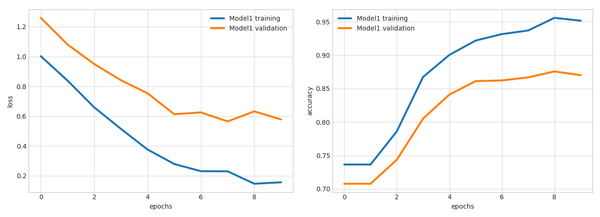

Why Golang and Let’s set it up buZz : Go is expressive, simple, concise, clean, efficient, open source …….…….and a lotNow let's see why it’s everywhere & everyone is talking about it and what actually the Golang
 AI with almost No Code Is it possible to use AI without needing to code?The answer is yes!Is a data set is enough to build a machine model?Yeah that's it..!All you
INSTALLING AND CONFIGURING ASTERISK FROM SOURCE ON UBUNTU SERVER Asterisk is used in VOIP. This is a guide on how to install Asterisk on Ubuntu Server. It’s pretty easy/straight forward apt-get update We will install Asterisk in “/usr/src”: cd /usr/src wget http://downloads.asterisk.org/pub/telephony/certified-asterisk/asterisk-certified-13.
Machine Learning Use Deep Learning to Clone Cars Driving Behavior GoalsUse the simulator to collect data of good driving behavior. Udacity provided a simulator application where we can steer a car around a track for data collection. The collected data